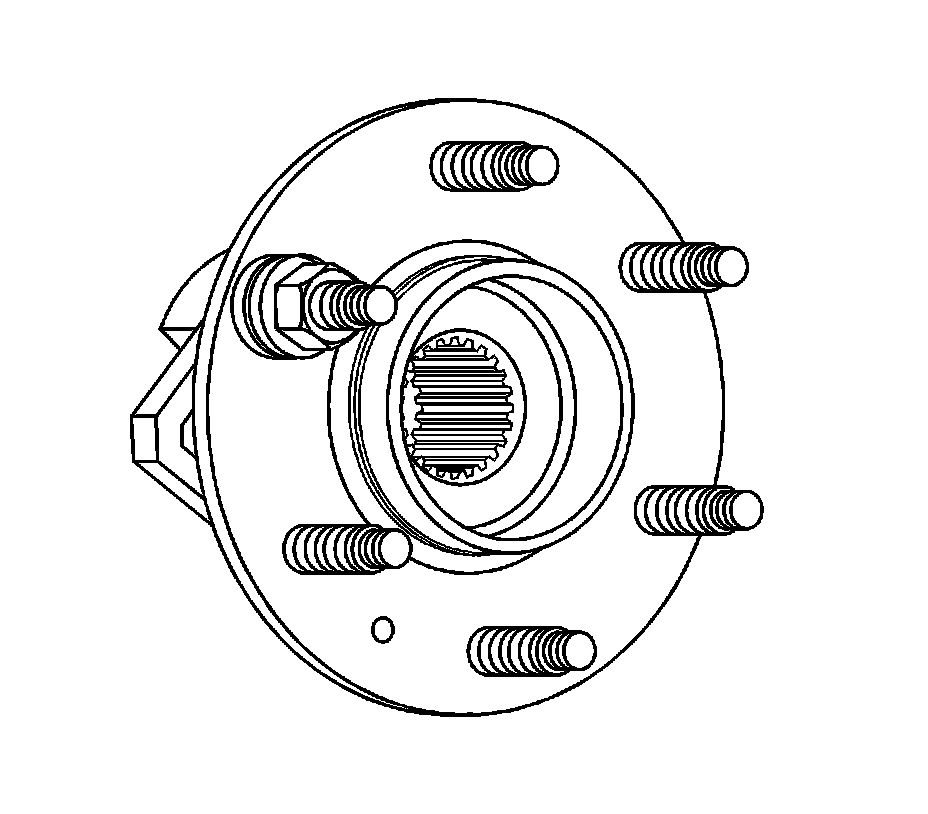

Rear Suspension
Wheel Stud Replacement
Tools Required
J 43631 Ball Joint Remover
Removal Procedure
1. Raise and support the vehicle. Refer to Lifting and Jacking the Vehicle (Service and Repair) .
2. Remove the tire and wheel. Refer to Tire and Wheel Removal and Installation (Service and Repair) .

3. Remove the wheel bearing/hub assembly. Refer to Rear Wheel Bearing and Hub Replacement (Rear Suspension) .
4. Using J 43631 remove the wheel stud from the wheel bearing.
Installation Procedure

1. Install the new stud from the back side of the hub.
2. Install flat washers on the wheel stud.
Important: Ensure that the wheel stud is fully seated against the wheel hub flange.
3. With the flat side of a wheel nut against the washers, tighten the wheel nut until the wheel stud head seats against the wheel hub flange.
4. Install the wheel bearing/hub assembly. Refer to Rear Wheel Bearing and Hub Replacement (Rear Suspension) .
5. Install the tire and wheel. Refer to Tire and Wheel Removal and Installation (Service and Repair) .
6. Lower the vehicle.